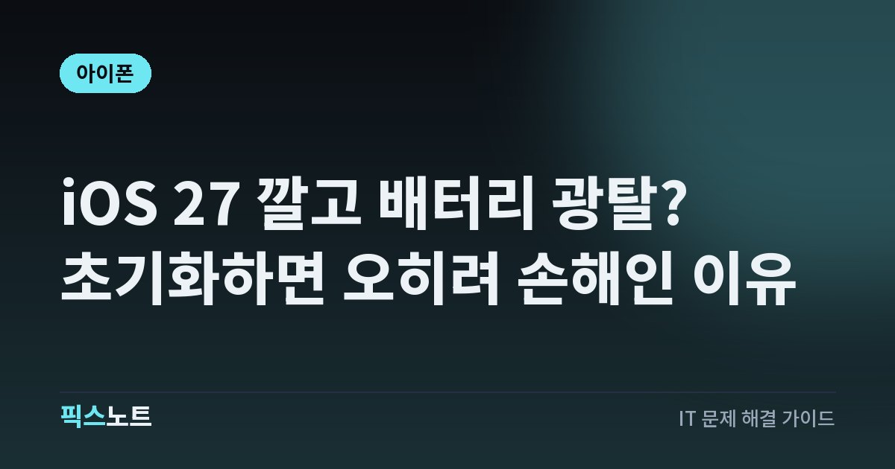

iOS 27 깔고 배터리 광탈? 초기화하면 오히려 손해인 이유
iOS 27 업데이트 뒤 배터리가 빨리 닳을 때 정상 후처리와 진짜 이상을 구분하고 순서대로 해결하는 법.

iOS 27로 올리고 나서 배터리가 금방 바닥나고 폰이 뜨끈하다면 초기화 버튼부터 찾게 되죠. 그런데 업데이트 직후 며칠은 원래 배터리를 더 쓰는 시기예요. 이때 초기화를 하면 새로 설정하는 작업이 처음부터 다시 돌아서 오히려 더 오래 고생할 수 있어요. 지금 내 폰이 정상적인 후처리 중인지, 진짜 문제가 있는 건지 가르는 방법부터 정리했어요.
결론부터: 업데이트 직후 며칠은 원래 배터리를 더 써요
Apple은 업데이트 뒤 배터리 사용 시간이 짧아졌다면 며칠 기다렸다가 다시 확인하라고 안내해요. 업데이트가 끝나서 폰을 쓸 수 있어도, 업데이트와 관련된 작업 일부는 백그라운드에서 계속 돌아가기 때문이에요. 이 작업은 배터리 사용 시간뿐 아니라 발열에도 영향을 줄 수 있어요.
그래서 처음 며칠 배터리가 빨리 닳고 폰이 따뜻한 건 고장 신호가 아닐 가능성이 커요. 지금 할 일은 초기화가 아니라, 폰이 남은 작업을 끝낼 시간을 주는 거예요.
1분 확인: ‘iOS 업데이트 진행 중’ 표시가 있나요?
설정 앱에서 배터리를 누르면 일일 사용 시간 바로 위에 제안이나 심층 분석이 나올 수 있어요. 여기에 ‘iOS 업데이트 진행 중’이 보이면 최신 업데이트가 백그라운드에서 마무리되고 있다는 뜻이에요. 새 폰을 막 설정했다면 ‘진행 중인 기기 설정’이 뜰 수도 있어요.
- 설정 > 배터리로 들어가요.
- 일일 사용 시간 위에 심층 분석 문구가 있는지 봐요.
- ‘iOS 업데이트 진행 중’이 있으면 며칠 기다린 뒤 다시 확인해요.
- 문구가 없는데도 계속 빨리 닳으면 다음 단계로 넘어가요.
Apple 설명으로는 이 활동이 마무리되면 배터리 사용 시간이 정상으로 돌아와요.
범인 찾기: 배터리를 먹는 앱이 따로 있는지 보기
같은 배터리 화면의 일일 사용 차트는 지난 7일과 비교해 오늘 배터리를 더 쓰는지, 덜 쓰는지 알려줘요. 차트 아래 ‘앱 및 시스템 활동’에는 배터리를 가장 많이 쓴 앱이 나오고, 앱을 누르면 그 앱의 지난 7일 대비 사용량도 볼 수 있어요.
- 설정 > 배터리에서 ‘모든 배터리 사용량 보기’를 눌러요.
- 화면을 거의 안 켰는데도 상단에 계속 있는 앱이 있는지 봐요.
- 앱 세부 정보에 ‘백그라운드 작업’이 보이면 그 앱이 뒤에서 배터리를 쓰고 있다는 뜻이에요. 설정 > 일반 > 백그라운드 앱 새로 고침에서 그 앱만 끌 수 있어요.
- 알림이 잦은 앱도 폰을 자꾸 깨우니 알림 횟수를 줄여요.
신호가 약한 곳이면 폰 탓이 아닐 수 있어요
앱 세부 정보에 ‘셀 적용 범위 없음 및 신호 약함’이 보이면, 아이폰이 Wi-Fi나 셀룰러 신호를 찾느라 배터리를 쓴 거예요. Apple도 신호가 강한 곳에서 쓸수록 전력을 덜 쓴다고 안내해요. 지하 사무실이나 건물 안쪽처럼 수신이 약한 곳에서만 유독 빨리 닳는다면 업데이트보다 환경을 먼저 의심해 보세요.
- 인터넷을 쓸 땐 가능하면 Wi-Fi에 연결해요. Wi-Fi가 셀룰러보다 전력을 덜 써요.
- 한동안 통신이 안 되는 곳에 있을 걸 안다면 에어플레인 모드를 켜요.
- iPhone 12 이후 모델은 설정 > 셀룰러 > 셀룰러 데이터 옵션 > 음성 및 데이터에서 ‘5G 자동’을 켜 두면, 5G가 확실히 낫지 않을 때 LTE로 바꿔 배터리를 아껴요.
iPhone 15 Pro 이상이면 적응형 전력 모드부터 확인
iPhone 15 Pro와 이후 모델에는 적응형 전력 모드가 있어요. 최근 사용 패턴을 보고 배터리가 더 필요할 때를 예측해서 화면 밝기, 백그라운드 활동, 성능을 조절해 주는 기능이에요. Apple 사용 설명서에 따르면 지원 모델에서는 기본으로 켜져 있어요.
- 설정 > 배터리 > 전력 모드로 들어가요.
- 적응형 전력 모드가 켜져 있는지 확인해요.
- 꺼져 있다면 켜 두세요. 배터리가 20%에 이르면 저전력 모드를 자동으로 켜 주기도 해요.
급할 땐 저전력 모드, 원인 찾을 땐 끄고 보세요
당장 충전할 수 없는 날엔 저전력 모드가 가장 확실한 응급처치예요. 메일 가져오기, ‘Siri야’, 백그라운드 앱 새로 고침, 일부 시각 효과를 줄이거나 꺼서 전력 사용을 낮춰요.
- 설정 > 배터리 > 전력 모드에서 저전력 모드를 켜요.
- 제어 센터에서도 바로 켤 수 있어요.
- 80% 이상 충전되면 저전력 모드는 자동으로 꺼져요.
초기화부터 하면 손해인 이유
업데이트 다음 날 배터리가 빨리 닳는다고 모든 설정 재설정이나 공장 초기화부터 하는 건 순서가 거꾸로예요. Apple 배터리 화면에 ‘진행 중인 기기 설정’이라는 심층 분석이 따로 있을 만큼, 새로 설정한 폰은 한동안 뒤에서 할 일이 많아요. 초기화하면 이 작업이 처음부터 다시 시작되고, 백업이 덜 된 상태라면 사진이나 인증 정보를 잃을 위험까지 생겨요.
순서는 이렇게 가는 게 맞아요.
- 심층 분석에 ‘iOS 업데이트 진행 중’이 있는지 확인
- 며칠 쓰면서 일일 사용 차트 비교
- 배터리를 많이 쓰는 앱과 신호 상태 확인
- 배터리 성능 상태 확인
- 그래도 안 되면 백업한 뒤 초기화나 지원 요청 검토
며칠 지나도 그대로면: 배터리 성능 상태와 지원
업데이트 작업이 끝났고 앱이나 신호 문제도 아닌데 계속 빨리 닳는다면 배터리 자체를 볼 차례예요. 모든 충전식 배터리는 수명이 있고, 업데이트 시기와 배터리 노화가 우연히 겹칠 수도 있어요.
- iPhone 15 이후 모델은 설정 > 배터리 > 배터리 성능 상태로 들어가요.
- iPhone 14 이전 모델은 설정 > 배터리 > 배터리 성능 상태 및 충전으로 들어가요.
- 성능 상태 옆에 ‘서비스’가 보이면 배터리 교체를 고려하라는 뜻이에요.
- 설정 > 일반 > 소프트웨어 업데이트에서 더 새로운 iOS 27 업데이트가 있는지도 확인해요.
지원을 요청하기 전에는 사진과 파일을 iCloud나 컴퓨터에 백업하고, 배터리 화면을 캡처해 두면 상황을 설명하기 쉬워요.
자주 묻는 질문
iOS 27 업데이트 후 배터리는 며칠이면 정상으로 돌아오나요?
Apple은 정확한 기간 대신 며칠 기다렸다가 다시 확인하라고 안내해요. 설정 > 배터리의 심층 분석에서 ‘iOS 업데이트 진행 중’ 문구가 사라졌는지 보는 게 가장 확실한 기준이에요.
적응형 전력 모드를 켜면 폰이 느려지나요?
배터리가 부족할 것 같은 날에는 화면 밝기, 백그라운드 활동, 성능을 조절할 수 있어서 무거운 작업에서 체감 차이가 날 수 있어요. 평소에는 백그라운드에서 알아서 작동하고, 설정 > 배터리 > 전력 모드에서 끌 수도 있어요.
배터리 최대 용량이 떨어졌는데 업데이트 때문인가요?
최대 용량은 배터리가 노화하면서 서서히 줄어드는 값이라 업데이트 하나로 판단하기 어려워요. 성능 상태 옆에 ‘서비스’ 표시가 뜨는지, 며칠이 지나도 사용 시간이 계속 짧은지를 함께 보세요.
초기화하면 배터리 문제가 해결되지 않나요?
원인이 업데이트 후처리라면 초기화는 도움이 안 되고, 새로 설정하는 동안 오히려 배터리를 더 쓸 수 있어요. 앞의 순서대로 확인한 뒤에도 비정상일 때, 백업을 끝낸 다음 마지막 수단으로 검토하세요.